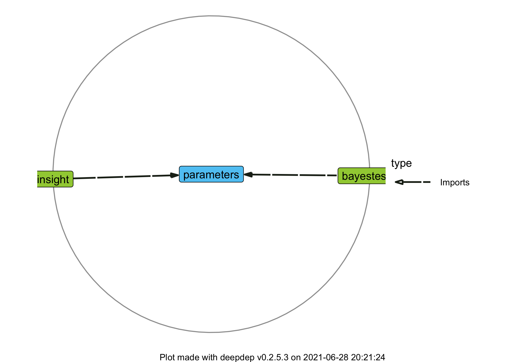
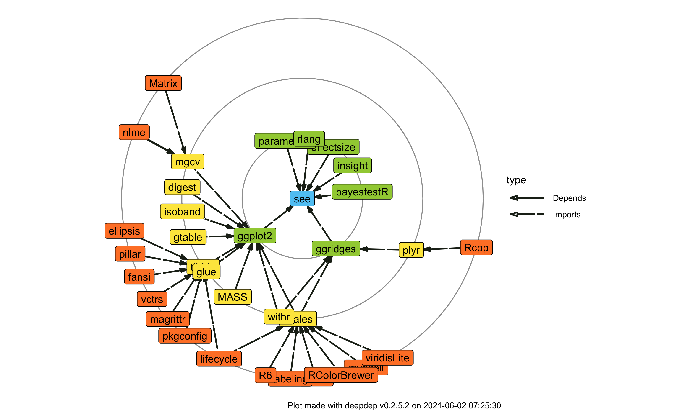
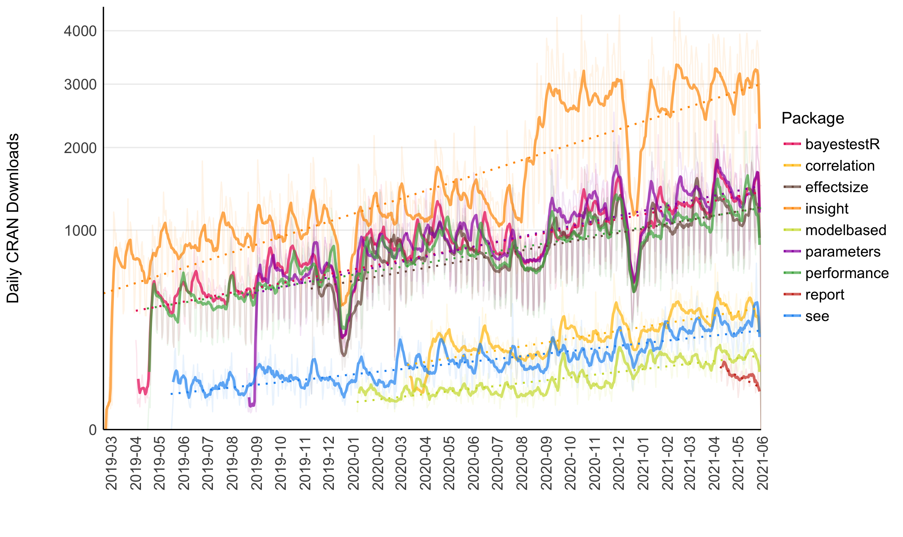
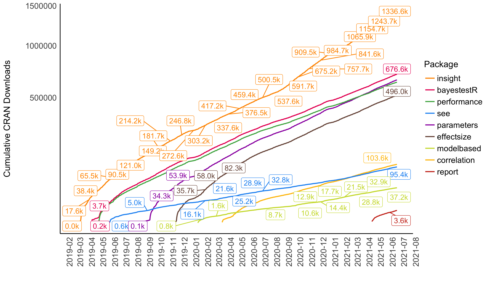

easystats


.
What is easystats?
easystats is a collection of R packages, which aims to provide a unifying and consistent framework to tame, discipline, and harness the scary R statistics and their pesky models.
However, there is not (yet) an unique “easystats” way of doing data analysis. Instead, start with one package and, when you’ll face a new challenge, do check if there is an easystats answer for it in other packages. You will slowly uncover how using them together facilitates your life. And, who knows, you might even end up using them all. Gotta catch ’em all!
Installation
The whole easystats suite can be installed at once with the following:
install.packages("remotes")
remotes::install_github("easystats/easystats")You can then load the entire ecosystem by running:
The package is currently not available on CRAN, but we are working on submitting it there soon.
Citation
Do you wish to cite easystats? ❤️
Have a look at this article on how you can do so! https://easystats.github.io/easystats/articles/resources.html
Getting started
Each easystats package has a different scope and purpose. This means your best way to start is to explore and pick the one(s) that you feel might be useful to you. However, as they are built with a “bigger picture” in mind, you will realize that using more of them creates a smooth workflow, as these packages are meant to work together. Ideally, these packages work in unison to cover all aspects of statistical analysis and data visualization.
- report: 📜 🎉 Automated statistical reporting of objects in R
- correlation: 🔗 Your all-in-one package to run correlations
- modelbased: 📈 Estimate effects, group averages and contrasts between groups based on statistical models
- bayestestR: 👻 Great for beginners or experts of Bayesian statistics
- parameters: 📊 Obtain a table containing all information about the parameters of your models
- performance: 💪 Models’ quality and performance metrics (R2, ICC, LOO, AIC, BF, …)
- effectsize: 🐉 Compute, convert, interpret and work with indices of effect size and standardized parameters
- insight: 🔮 For developers, a package to help you work with different models and packages
- see: 🎨 The plotting companion to create beautiful results visualizations
- datawizard: 🧙 Magic potions to clean and transform your data
Frequently Asked Questions
How is easystats different from the tidyverse?
You’ve probably already heard about the tidyverse, another very popular collection of packages (ggplot, dplyr, tidyr, …) that also makes using R easier. So, should you pick the tidyverse or easystats? Pick both!
Indeed, these two ecosystems have been designed with very different goals in mind. The tidyverse packages are primarily made to create a new R experience, where data manipulation and exploration is intuitive and consistent. On the other hand, easystats focuses more on the final stretch of the analysis: understanding and interpreting your results and reporting them in a manuscript or a report, while following best practices. You can definitely use the easystats functions in a tidyverse workflow!
easystats + tidyverse = ❤️
Can easystats be useful to advanced users and/or developers?
Yes, definitely! easystats is built in terms of modules that are general enough to be used inside other packages. For instance, the insight package is made to easily implement support for post-processing of pretty much all regression model packages under the sun. We use it in all the easystats packages, but it is also used in other non-easystats packages, such as ggstatsplot, modelsummary, ggeffects, and more.
So why not in yours?
Moreover, the easystats packages are very lightweight, with a minimal set of dependencies, which again makes it great if you want to rely on them.
Documentation
Websites
Each easystats package has a dedicated website.
For example, website for parameters is https://easystats.github.io/parameters/.
Blog
In addition to the websites containing documentation for these packages, you can also read posts from easystats blog: https://easystats.github.io/blog/posts/.
Other learning resources
In addition to these websites and blog posts, you can also check out the following presentations and talks to learn more about this ecosystem:
https://easystats.github.io/easystats/articles/resources.html
Dependencies
Most easystats packages are very lightweight, i.e., they don’t rely nor import any other packages! This means that you can safely use them as dependencies in your own packages, without the risk of a butterfly effect, where a small change in a distant downstream dependency with unexpected upstream consequences.
For example, the parameters package only relies on two other packages.

There is one exception!
The see package is one of our high-level packages that is responsible for plotting and creating figures, relying thus on other packages such as ggplot2, which has a substantial number of dependencies.

Versioning
Package version numbers indicate following: MAJOR.MINOR.PATCH.DEVELOPMENT. Here are key steps to keep in mind:
As long as packages are in a more or less rapidly developing and changing state, the major version number is typically
0.Once we think we will have a stable base that will likely not change dramatically or soon, the major version number will be set to
1, and will be increased for following major changes that probably break the current API.When new features are added or (re)moved, we typically increase the minor version number.
Minimal changes or bug fixes only are indicated by increasing the patch version number.
Current development versions of our packages (i.e. master/main branch from GitHub) additionally have a development version number.
Downloads
| Total | insight | bayestestR | parameters | performance | effectsize | correlation | see | modelbased | report |
|---|---|---|---|---|---|---|---|---|---|
| 4,140,470 | 1,387,142 | 702,619 | 650,066 | 629,257 | 517,366 | 109,335 | 1e+05 | 39,569 | 5,093 |
Trend

Cumulative downloads

Average monthly downloads

Contributing
We are happy to receive bug reports, suggestions, questions, and (most of all) contributions to fix problems and add features. Pull Requests for contributions are encouraged.
Here are some simple ways in which you can contribute (in the increasing order of commitment):
- Read and correct any inconsistencies in the documentation
- Raise issues about bugs or wanted features
- Review code
- Add new functionality
Code of Conduct
Please note that the ‘easystats’ project is released with a Contributor Code of Conduct. By contributing to this project, you agree to abide by its terms.